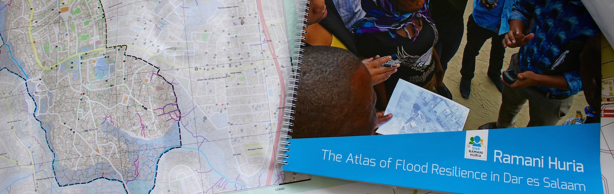

Community Mapping For Flood Resilience
“Dar Ramani Huria” (Swahili for “Dar Open Map”) is the name of a community-based mapping project in Dar es Salaam, Tanzania. This project brought together international agencies, local university students and community members with the aim of putting the city’s most flood- prone areas “on the map” for the first time, an endeavor made possible by the coordinated adoption of a host of geospatial and open data tools. Dar es Salaam is one of the fastest growing cities in Africa, with an annual population growth of about 5%. Urbanization is largely unplanned and over half of city residents live in informal settlements. Every year during the rainy seasons, the coastal city endures floods and heavy rains that cause great damage and economic loss, even death. As is often the case, the poorest citizens living in informal areas suffer disproportionally from these hazardous events. Damaged roads and footpaths force business and services to close for days and, after flooding, unplanned settlements become more vulnerable to diseases such as cholera. Because of the city’s largely unregulated growth, available maps are highly inaccurate, which hampers both the immediate response attempts and adequate long-term planning to improve disaster preparedness. Dar Ramani Huria is a multi-partner collaboration facilitated by Tanzania’s 2011 commitment to the Open Government Partnership (OGP), an international initiative in which governments have pledged to become more open, accountable and responsive to citizens. Under the auspices of the Tanzania government, and in line with its new commitment to transparency and citizen engagement, the project is supported by the Tanzania Commission for Science and Technology (COSTECH), the World Bank’s Global Facility for Disaster Reduction and Recovery (GFDRR), and the Red Cross. The key operational responsibility lies with Humanitarian OpenStreetMap Team (HOT) and such local partners as municipal councils and planning agencies. Playing another fundamental role in giving legitimacy and stability to the project, two local universities (University of Dar es Salaam and Ardhi University) seized this opportunity to teach valuable geospatial analysis skills to students, who make up most of the mapping teams. Since January 2015, the project has covered 29 neighborhoods (locally known as wards) within four districts of Dar es Salaam, encompassing the most flood-prone areas of the city. The project operations follow these main steps: 1) Building on drone-generated Very High Resolution (VHR) imagery, mappers capture features like drainage lines, water and sanitation facilities, roads and footpaths, buildings and key landmarks. 2) The detailed data captured in the various wards through GPS devices are digitized using the OpenStreetMap platform. 3) Risk assessment is performed by InaSAFE software, an open-source tool piloted in Indonesia that is provided as a plugin for QGIS and enables users to run natural disaster scenarios for better impact assessment and response planning.
Key Lessons Learned
Ripple effects of an open data initiative for resilience
During a conversation about the project, two executives of Ramani Huria (Edward Anderson, Senior Disaster Risk Management Specialist at the World Bank, and Mark Iliffe, a geospatial expert) first remarked that from the outset the benefits of mapping started multiplying in areas of interventions beyond the original intended goals. The project website reports several interviews with Ward Executive Officers of the involved neighborhoods, illustrating how quickly they turned into the most enthusiastic advocates of the initiative – most of them, the interviewer reported, proudly display printouts of the maps in the office. These local officials can now use the extremely accurate ward maps to present projects to the municipality, or to plan roads and drainage construction. Covered wards have also benefited from these maps in unexpected ways, such as promoting adhesion to the national addressing system, planning for better provision of services like health centers and schools, or directing the work of local NGOs. Such unintended effects of the initiative echo the very justification of open data, which is to make curated information accessible, understandable and usable for a broad array of users, potentially serving purposes unforeseen by the data creators. Furthermore, maps and data are now available for anyone interested in doing research or developing applications that can improve the livelihoods of citizens. Another fascinating aspect of the project, which extends beyond disaster response, is how well this approach to mapping matches the reality of a city growing at a fast pace in a mostly unplanned fashion. While lacking or outdated maps are often cited as one huge obstacle to systematic upgrading of urban informal areas, this community-mapping initiative (facilitated by the OSM platform) empowers the very residents of these communities – who are both the experts and ultimate beneficiaries – giving them a voice in the identification and prioritization of their actual needs. In a peculiar role switch, the data deficit caused by Dar’s inadequate institutional capacity is gradually being filled from the bottom up.
Triggering a global collaborative network
As noted by Patrick Meier in a very thought-provoking talk on creating resilience through big data: “The term resilience is important because it focuses not on the development and disaster response community, but rather on local at-risk communities” and their own coping mechanisms. Within the long-standing debate about the effectiveness (or lack thereof) of top- 4) Maps and underlying data collected within Ramani Huria are free and accessible for anyone on OpenStreetMap (OSM) and on the project website. As the project is rolled out in multiples wards, various technical workshops, kickoff events and ‘maphatons’ are effectively keeping the communities engaged and promoting the dissemination of results in different forum. down approaches in development, Dar Ramani Huria is a remarkable example of how a broad array of involved parties can be successfully mobilized in a multi-polar scheme. Clearly, a complex partnership like Dar Ramani Huria benefited from a fortunate combination of enabling conditions, including the government’s timely commitment towards open data, the backing of universities and the political will of local officials. Nevertheless, the unprecedented growth of geospatial and analytical open-source software plays an indisputable “crowdsourcing” role. Nowadays, a highly complex issue such as improving resilience in unplanned urban areas can be tackled within a paradigm of distributed problem solving, where local civil society can join international geospatial experts and software designers to contribute to critical urban-planning decisions. Another interesting byproduct of open data is the creation of “virtual communities” that effectively connect people who would not seem associated by location or cultural proximity. A case in point is the InaSAFE tool for disaster risk analysis, initially designed in Indonesia, which was seamlessly combined with Ramani Huria-generated maps for flooding risk analysis. The desire to help when natural hazards hit (we are sadly witnessing stronger and more frequent earthquakes, floods and hurricanes all over the world) is probably a universal human reaction, particularly when such events strike close to home or we perceive a personal connection to the victims. Yet, our globalized and constantly connected world can leave us a sense of frustration when we struggle to identify an effective way to help or fail to see the fruits of our contribution. The multiplication of open access platforms (OpenStreetMaps, Ushahidi, WorldPop and the likes) and, to some extent, social media have this promising power to directly match people in need with individuals or groups that have the right skills to help. It is well documented how many digital volunteers and geospatial experts mobilized to help after the recent earthquakes in Haiti and Nepal, working together (remotely or in loco) contributing coding skills, updating web documents and maps, or simply posting tweets and photos to fill critical information gaps. While GIS and geospatial analysis still require a significant degree of technical skills for certain steps along the data pipeline, there are increasing opportunities for basic users to perform key data collection tasks, also owing to the huge role of mobile technology in bridging the digital divide. Certainly, open data does not mean “unregulated,” and issues of security or privacy protection deserve adequate consideration at the international and local levels. Nonetheless Dar Ramani Huria is yet another demonstration of the undeniable potential of open-data platforms to effectively promote a transparent, collaborative and incremental creation of vital information to improve lives.
References
Davies, Tim. 2014. “Open Data in Developing Countries – Emerging insights from Phase I”. Web Foundation, Berlin.
Deogawanka, Sangeeta. 2015, May 9. How Crowdsourced Mapping is Supporting Relief Efforts in Nepal [Blog post]. Retrieved from https://www.gislounge.com/how-crowdsourced- mapping-is-supporting-relief-efforts-in-nepal/ Humanitarian OpenStreetMap Team. 2015. “Flood Resilience in Dar es Salaam Second Quarterly Report”. HOT, Washington, DC.
Meier, Patrick. 2013, January 11. How to Create Resilience Through Big Data [Blog post]. Retrieved from https://irevolutions.org/2013/01/11/disaster-resilience-2-0/
UN Committee of Experts on Global Geospatial Information Management. 2015. “Future trends in geospatial information management: the five to ten year vision”. UN-GGIM, New York.
Web sites and software
Ramani Huria (http://ramanihuria.org/) - Dar Ramani Huria project website providing description, access to data and news.
InaSAFE (http://inasafe.org) - an extension for QGIS that allows disaster managers to do better contingency planning for disasters.
OpenStreetMap (https://www.openstreetmap.org/) - The Free Wiki World Map – An openly licensed map of the world being created by volunteers using local knowledge, GPS tracks and donated sources.
QGIS (https://www.qgis.org/) - is a cross-platform free and open-source desktop geographic information system (GIS) application that provides data viewing, editing, and analysis.
Ushahidi (https://www.ushahidi.com/) - a non-profit software company that develops free and open-source software (LGPL) for information collection, visualisation, and interactive mapping.
WorldPop (http://www.worldpop.org.uk/) - open platform for spatial demographic data